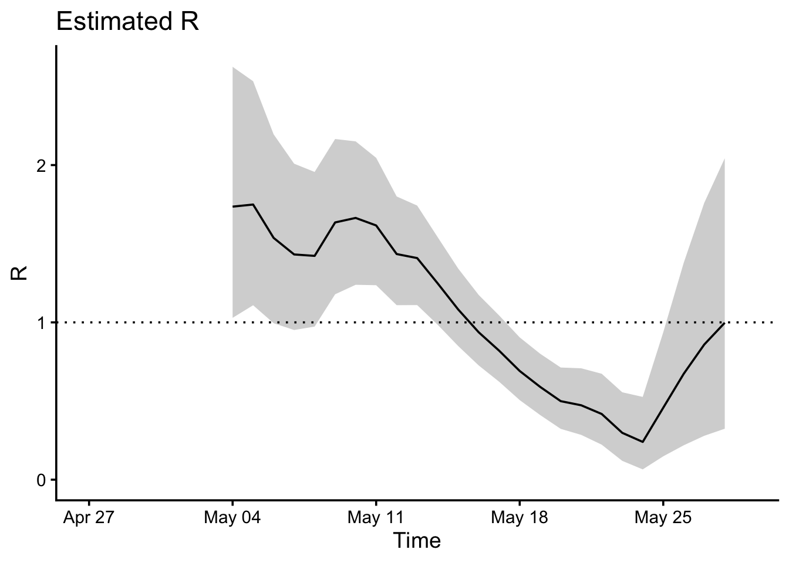
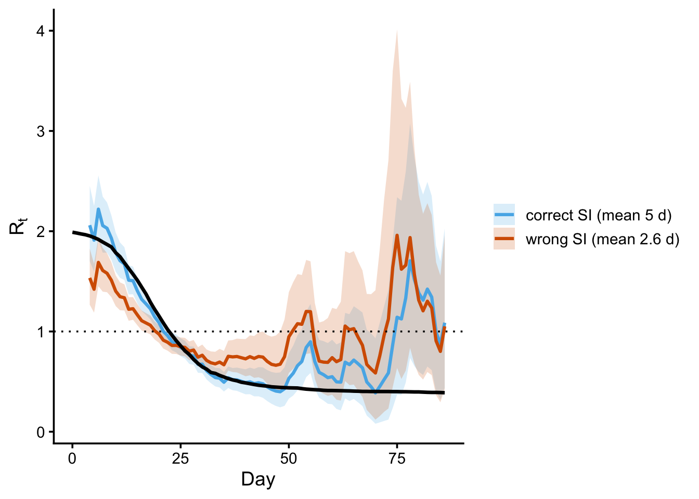

library(EpiEstim)
library(ggplot2)
library(dplyr)
theme_set(theme_classic(base_size = 14))
set.seed(42)T6 — Estimating R_t from incidence data
Day 3 · models meet data
The question. During an epidemic we observe daily case counts, not \(\beta\) and \(\gamma\). How do we get the reproduction number from them, and how far can we trust the answer?
The renewal equation
Let \(I_t\) be the number of new cases on day \(t\), and \(w_s\) the serial interval distribution, i.e. the probability that a secondary case shows symptoms \(s\) days after its infector. Then the expected number of new cases is
\[ E[I_t] = R_t \sum_{s \ge 1} I_{t-s}\, w_s . \]
Cori et al. (2013) assume \(I_t\) is Poisson, \(R_t\) is constant within a sliding window, and \(R_t\) has a gamma prior. The posterior of \(R_t\) is then again a gamma distribution. This is what EpiEstim::estimate_R computes.
Part A · A real outbreak: H1N1 in a school, 2009
data(Flu2009)
head(Flu2009$incidence) dates I
1 2009-04-27 1
2 2009-04-28 1
3 2009-04-29 0
4 2009-04-30 2
5 2009-05-01 5
6 2009-05-02 3The serial interval for influenza has mean 2.6 days and SD 1.5 days (Ferguson et al. 2005, Nature).
res_flu <- estimate_R(Flu2009$incidence, method = "parametric_si",
config = make_config(mean_si = 2.6, std_si = 1.5))
plot(res_flu, what = "R", legend = FALSE)
Part B · Does EpiEstim recover the truth?
With real data we never know the true \(R_t\). So we simulate an epidemic in which we do know it, and test the method on that.
We use the Gillespie SIR model from T2 with \(N = 2000\), \(R_0 = 2\) and a mean infectious period of 5 days (\(\gamma = 0.2\)/day). In this model the true reproduction number is \(R_t = R_0\, S(t)/N\). The infectious period is exponential, so the generation interval is also exponential, with mean and SD both \(1/\gamma = 5\) days.
sim_epidemic <- function(N, beta, gamma, I0) {
S <- N - I0; I <- I0; t <- 0
inf_times <- rep(0, I0); S_track <- data.frame(time = 0, S = S)
while (I > 0) {
a_inf <- beta * S * I / N; a_rec <- gamma * I
t <- t + rexp(1, a_inf + a_rec)
if (runif(1) < a_inf / (a_inf + a_rec)) {
S <- S - 1; I <- I + 1
inf_times <- c(inf_times, t)
S_track <- rbind(S_track, data.frame(time = t, S = S))
} else I <- I - 1
}
list(inf_times = inf_times, S_track = S_track)
}
N <- 2000; gamma <- 0.2; R0 <- 2
sim <- sim_epidemic(N, beta = R0 * gamma, gamma = gamma, I0 = 10)
days <- 0:ceiling(max(sim$inf_times))
incidence <- as.vector(table(factor(floor(sim$inf_times), levels = days)))
true_Rt <- data.frame(day = days,
Rt = R0 * approx(sim$S_track$time, sim$S_track$S, xout = days,
method = "constant", rule = 2)$y / N)Now we estimate \(R_t\) twice: with the correct serial interval (mean 5, SD 5), and with the influenza one from Part A (mean 2.6, SD 1.5), as if we had borrowed it from the wrong disease.
estimate_with <- function(mean_si, std_si, label) {
T_end <- length(incidence)
cfg <- make_config(mean_si = mean_si, std_si = std_si,
t_start = 2:(T_end - 6), t_end = 8:T_end)
r <- estimate_R(incidence, method = "parametric_si", config = cfg)$R
data.frame(day = r$t_end - 3 - 1, # window centre, as a day since start
mean = r$`Mean(R)`, lo = r$`Quantile.0.025(R)`, hi = r$`Quantile.0.975(R)`,
si = label)
}
est <- rbind(estimate_with(5, 5, "correct SI (mean 5 d)"),
estimate_with(2.6, 1.5, "wrong SI (mean 2.6 d)"))
est <- filter(est, day <= max(days) - 10) # drop the noisy tailggplot(est, aes(day, mean, colour = si, fill = si)) +
geom_ribbon(aes(ymin = lo, ymax = hi), alpha = 0.2, colour = NA) +
geom_line(linewidth = 1.1) +
geom_line(data = filter(true_Rt, day <= max(est$day)), aes(day, Rt),
inherit.aes = FALSE, linewidth = 1.2) +
geom_hline(yintercept = 1, linetype = "dotted") +
scale_colour_manual(values = c("#56B4E9", "#D55E00"), aesthetics = c("colour", "fill")) +
labs(x = "Day", y = expression(R[t]), colour = NULL, fill = NULL)
Why it goes wrong. Growth rate \(r\) and reproduction number are linked through the generation interval. For an exponential interval with mean \(T_g\), \(R = 1 + r T_g\). Assuming a shorter serial interval means the same observed growth is read as a smaller \(R\). Shorter generations need fewer secondary cases each to grow equally fast.
Exercises
- Change the window length from 7 to 3 or 14 days. What do you gain and what do you lose?
- Observe only 30% of cases (
rbinom(length(incidence), incidence, 0.3)). Does \(R_t\) change? What if the reporting fraction increases over time? - Simulate a lockdown: drop \(\beta\) by half on day 30 (modify
sim_epidemic). How many days later does EpiEstim detect \(R_t < 1\)?
Project hooks
- EpiEstim datasets:
SARS2003,Measles1861,Smallpox1972,Flu1918,mers_2014_15. Sensitivity to the serial interval, under-reporting, interventions. See the project menu, family F.